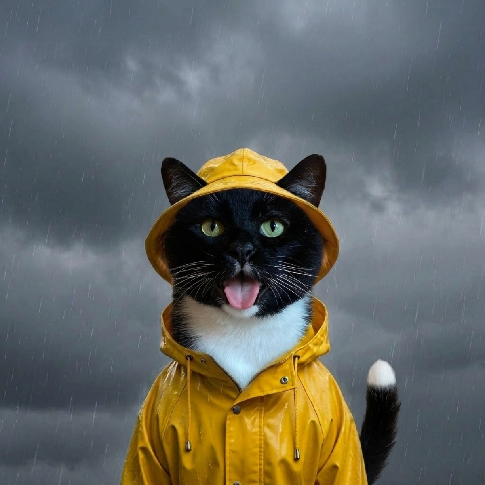

Why Do Cats Hate Rain So Much?
Open the door on a wet day and most cats freeze, glare at the sky, and retreat to the driest spot in the house. It is one of the great feline mysteries, and the answer is equal parts biology, history, and pure attitude. Here is what is really going on.
Their coat is not built to get soaked
People love to compare cats to little waterproof ninjas, but their fur tells a different story. A cat's coat is wonderful at trapping warmth and shedding loose hair, yet it is not very water resistant. When rain works past the outer layer, the fur underneath soaks up water like a sponge.
That has two miserable effects at once. Wet fur gets heavy, which feels strange and clumsy to an animal that prizes being light and quick on its feet. It also gets cold, because soaked fur loses its ability to insulate, so a drizzle that barely registers to you can leave your cat genuinely chilled. To a creature that spends a huge chunk of its waking life keeping that coat clean and sleek, a downpour is basically an insult.

Blame the desert ancestors
The domestic cat descends from wildcats of the dry, warm regions of the Near East and North Africa. These were animals shaped by sun, sand, and scarce water, not by rainforests. Rain simply was not a regular part of the world their instincts were tuned for, so there was never much pressure to learn to love it.
That heritage still shows up in everyday behavior. Cats are fastidious self-cleaners who would rather lick themselves spotless than splash through a puddle, and as the ASPCA cat care guides point out, grooming and a sense of routine are central to how a cat feels secure. A wet coat throws a wrench into all of it.
Rain is loud, and cats hear everything
Cats have famously sharp hearing, with a range that reaches far above what people can detect. That superpower is great for hunting a mouse behind the drywall and less great when the sky starts hammering the roof. The patter that sounds cozy to you can be a wall of unpredictable, echoing noise to your cat.
Add the occasional rumble of thunder or a gust rattling a window and you have a recipe for a stressed, hyper-alert little animal. Many cats respond by hiding somewhere small and quiet until the racket passes. It is not drama, it is a reasonable reaction from an ear that was engineered for the silence of a desert night.
Cats like to be in control, and rain ignores that
If there is one thing cats insist on, it is being the boss of their own circumstances. They choose where they sit, when they eat, and exactly how much affection you are allowed to offer. Weather is the rare force that does not check with them first.
Rain is unpredictable, it gets them dirty, and it undoes their careful grooming, which is no small thing. Regular grooming keeps a cat's coat clean, shiny, and sleek, and a healthy coat is so tied to wellbeing that, as the Cornell Feline Health Center notes, a dull or patchy coat can be one of the first signs a cat is unwell. Rain undermines the one project your cat works on all day. Of course they resent it.
The water-loving exceptions
Here is the fun twist: not every cat hates getting wet. A handful of breeds genuinely enjoy water. Maine Coons have a thick, somewhat water-resistant coat and a reputation for batting at faucets and even joining the occasional bath. Bengals, with their wild leopard-cat lineage, are notorious for splashing in sinks, tubs, and water bowls just for the thrill of it.
Plenty of ordinary house cats have a soft spot for a dripping tap too, even while they would never volunteer to stand in a storm. The difference usually comes down to coat type, early experiences, and personality. So if your cat treats the shower like a personal water park, you have not raised a weirdo. You have raised an exception, and a delightful one.
Let your cat report the rain
You cannot make your cat love a wet forecast, but you can make checking it more fun. With WeatherPets, your own cat delivers the day's forecast in character, which means you get to watch them reluctantly announce that yes, it is raining again, with all the dignity that implies. It is a small, charming way to start a gray morning, and it turns your cat's least favorite weather into your favorite notification.